Research quality is under threat from speed, fraud and AI
21 October 2026
Queensland University of Technology
Photo by Noah Buscher on Unsplash
Rambly
Labels
AI & ML
Good things turning bad
Prediction models
Research fraud
My first professional job
1994
Harlow, Essex
Taken as read
Overall research quality is bad
When I read a new paper my prior is “this is wrong” and the authors need to show me that they have worked carefully and thoroughly
I see this in my sleep

Labels
The Great Bear
Machine learning?
“By employing best-practice machine-learning techniques, such as PCA” PMID: 38253940
“Utilizing an artificial intelligence-based machine learning approach a generalized linear mixed (GLM) model was developed”
PMID: 40616247
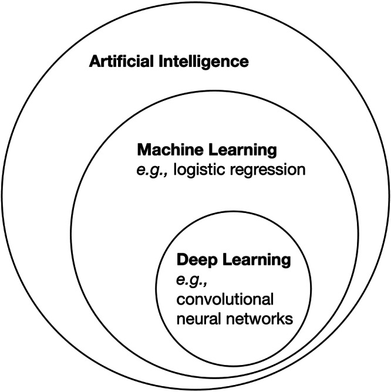
PMCID: PMC12820067
Machine learning??
Lasso
Support vector machine
I know big words
Methodology
Utilisation
Platform trials
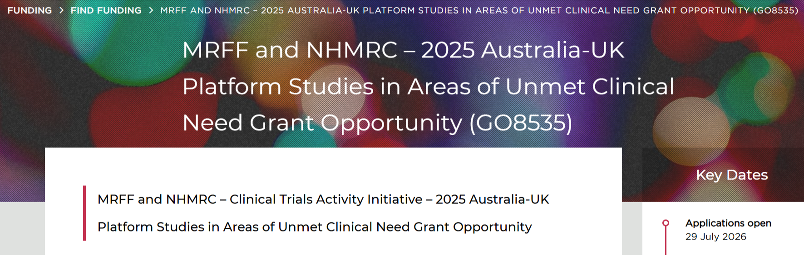
Change is easy
- Do the protocol, do the analysis, report the results
Change is easy
Do the protocol, do the analysis, report the results
Target trials also in vogue
Slow skills
Speed
Flood of submissions
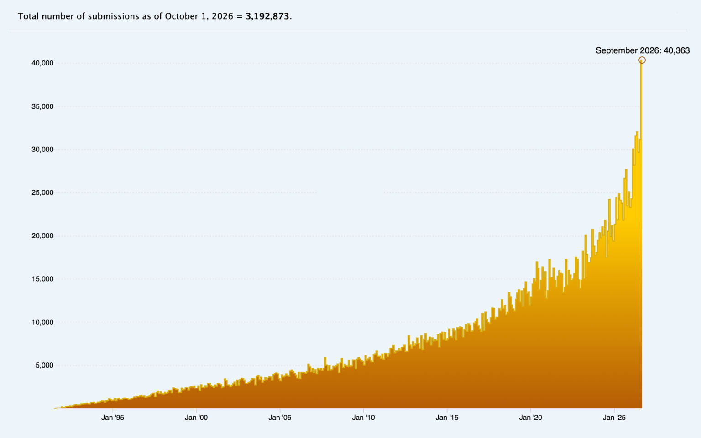
Crazy behaviour
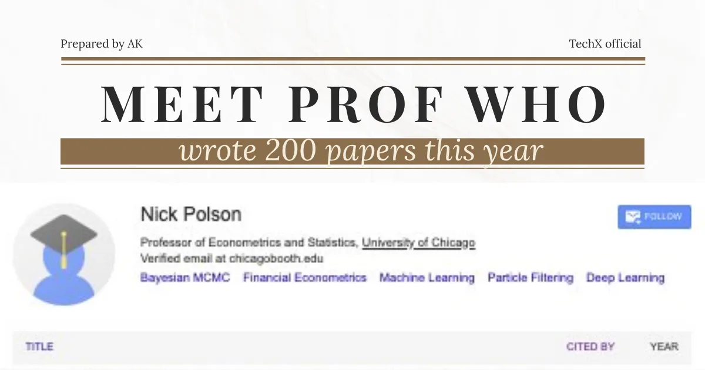
AI has uses
peer review
ethics
Good reforms go bad
Photo by Joe Dudeck on Unsplash
1) Data sharing
A good reform that has been underused
Allows others to validate your work
Allows others to run new analyses
Helps spot research fraud
Open data mining

OpenSafely
Keeps data safe
Allow more analysis
Solves many ethical concerns
Keep the machines at arms length
2) Ethics
Attempted census of Australian ethics committees
People without statistical qualifications
Transparency
Every Australian Human Research Ethics Committees needs to publicly state if they examine the study design or not
Need a national public registry of cleared projects
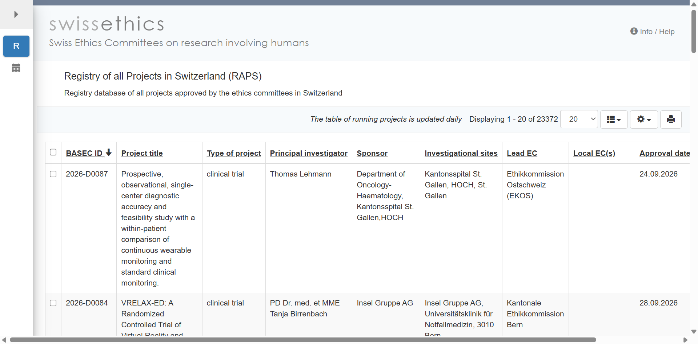
3) Shiny
Allows easy translation of statistical tools
Removed barrier of needing html programming skills
Personalised survival predictions
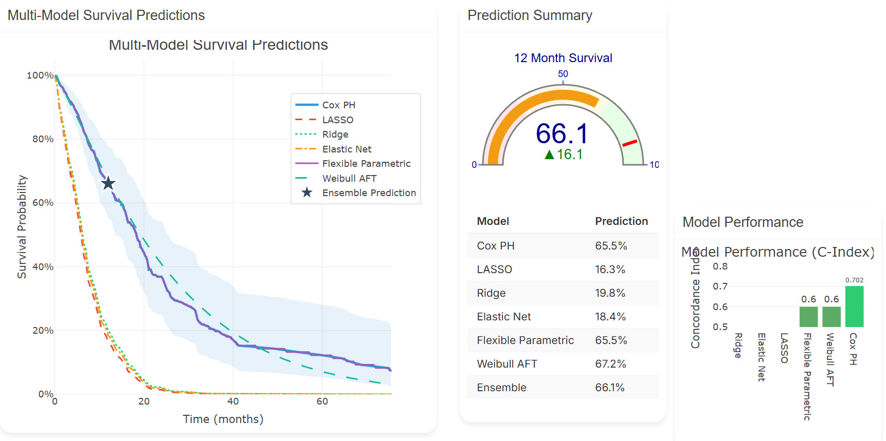
Prediction models
Photo by Immo Wegmann on Unsplash
Hacking
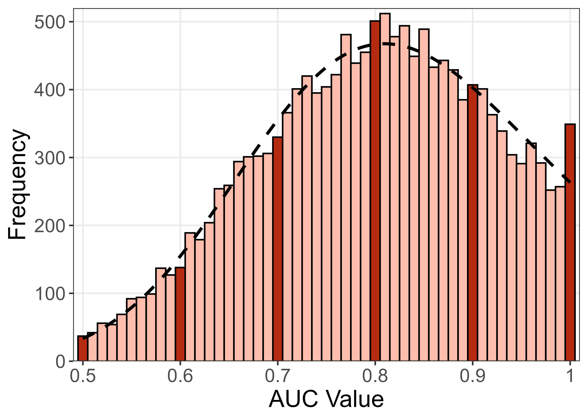
Routes to goals
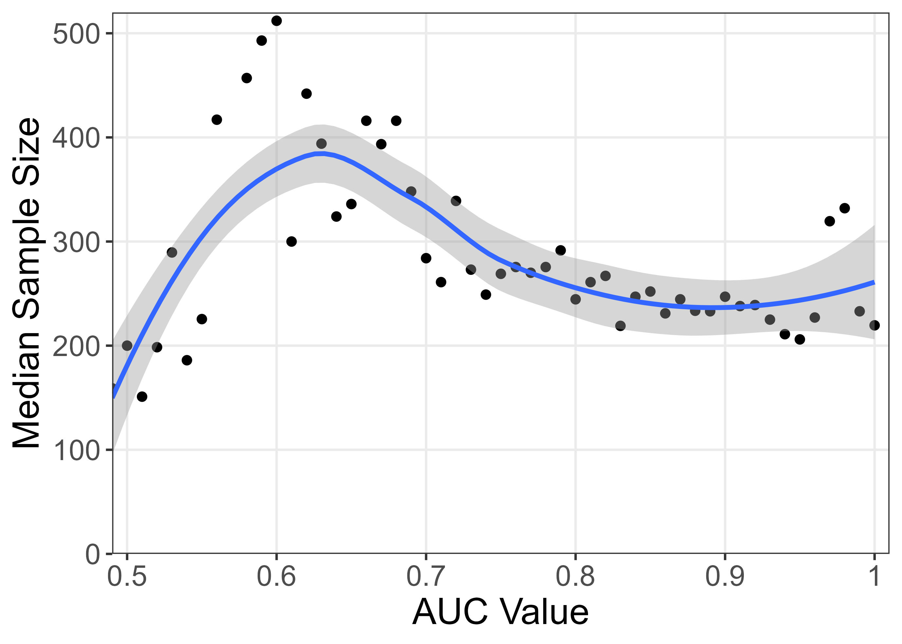
The temptation of perfection
TO DO, split over slides
0.90 to 1.0 looks like a small difference
No pills work in everybody
We rarely say we are ‘curing diseases’ with drugs/interventions, we usually say ‘treating’
Is ‘predicting disease’ the problem? Do we need a new phrase?
Changing treatment
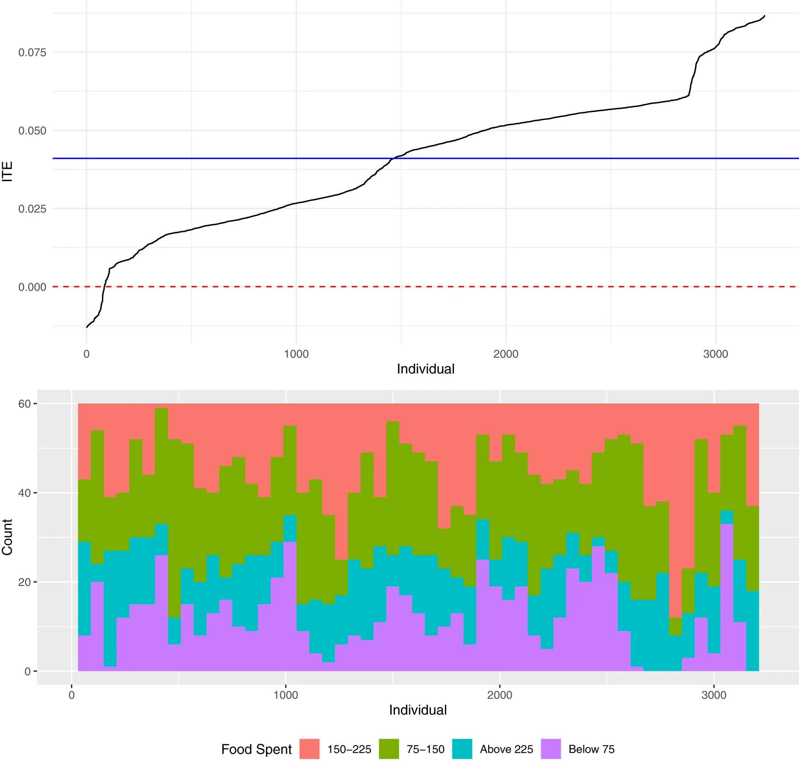
{width = 500}AI
Photo by Melanie Wasser on Unsplash
AI making too much (part 1)
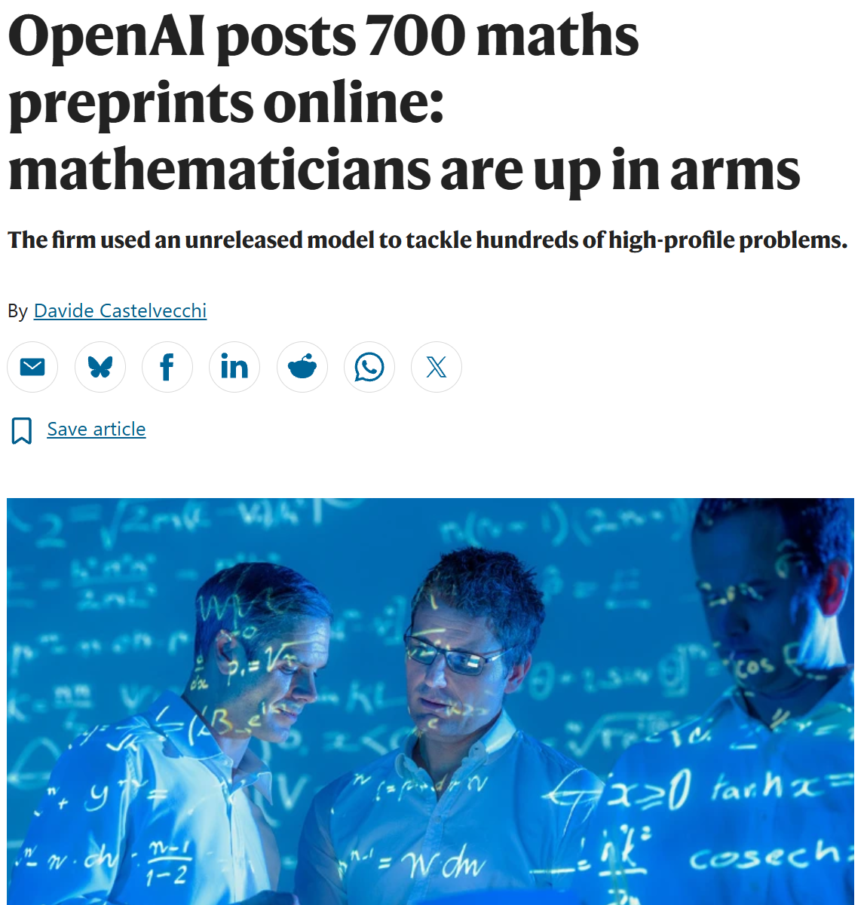
AI making too much (part 2)
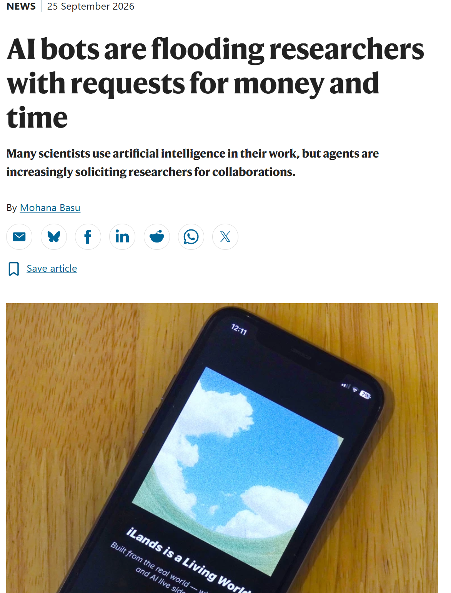
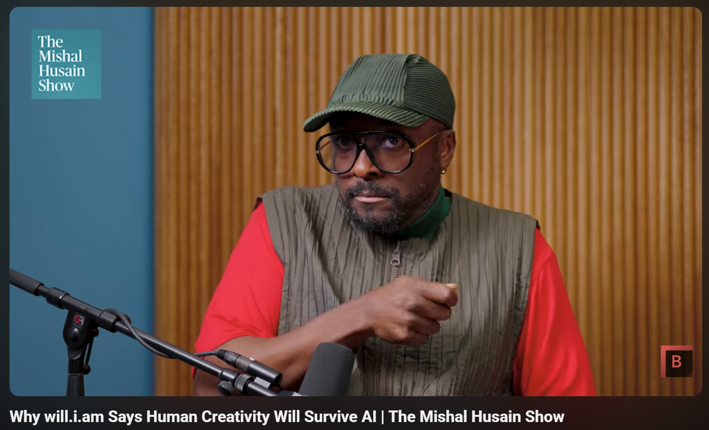
``Need a lived experience file’’, Will.i.am
Predict the next word
Julian Barnes
Predict the next pixel
AI
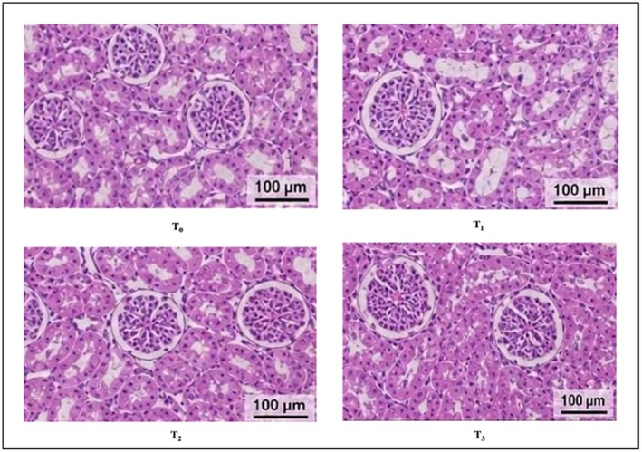
Real
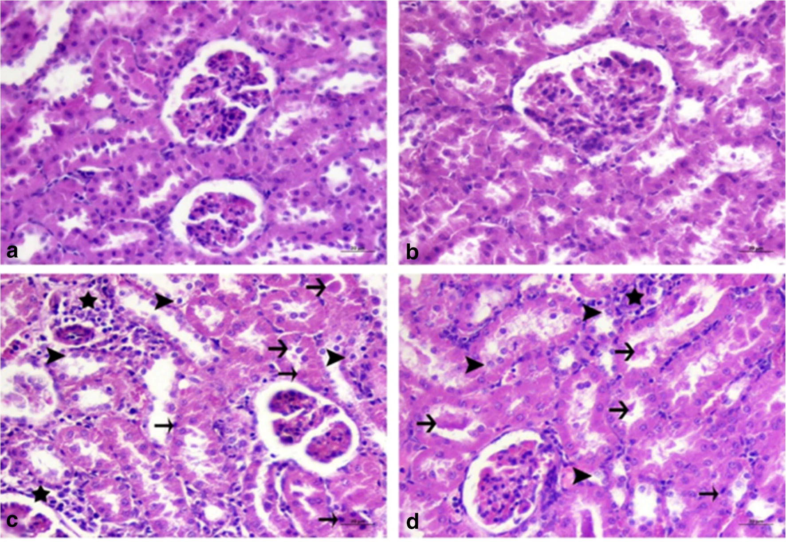
Bonkers stuff

Shift the AUC distribution?
Fraud
BMJ
Kaggle
Upper limit on publication counts
Are you real?
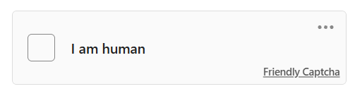
- Magazine that now only takes pitches by phone after a deluge of AI stories
Why are we here?
Questions and comments
what was the other thing you thought about during sleep?